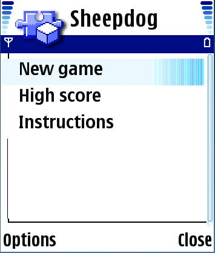
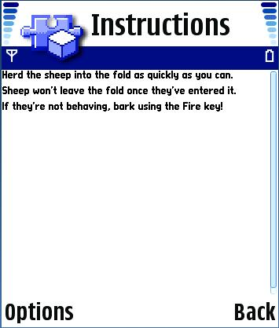
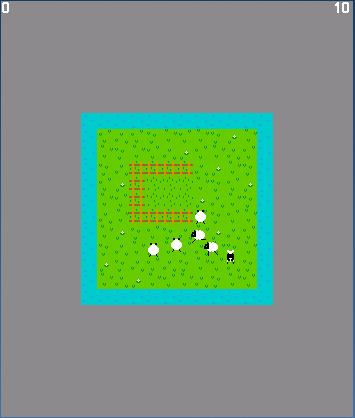
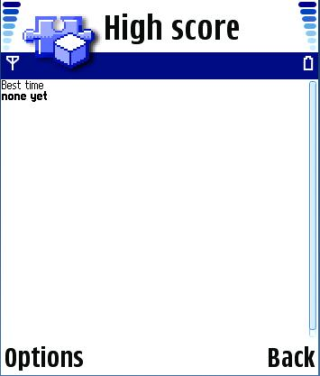
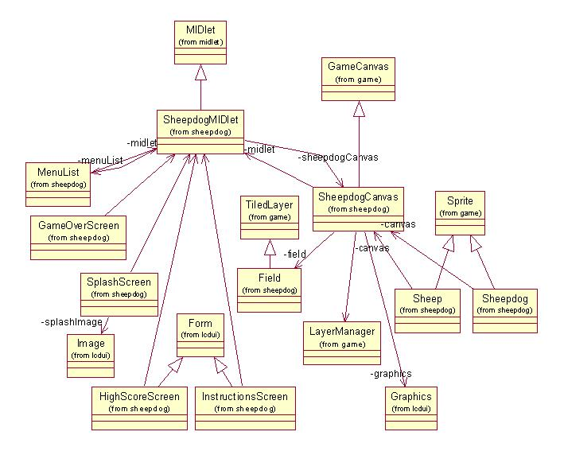

|
||||||||||
| PREV PACKAGE NEXT PACKAGE | FRAMES NO FRAMES | |||||||||
See:
Description
| Class Summary | |
| Field | Field: Implements the background field for a simple MIDlet game. |
| GameOverScreen | GameOverScreen: Implements the End-Of-Game screen for a simple MIDlet game. |
| HighScoreScreen | HighScoreScreen: Implements the high score screen as a Form extension. |
| InstructionsScreen | InstructionsScreen: Implements the instructions screen for a simple MIDlet game. |
| MenuList | MenuList: Implements the command menu for a simple game MIDlet. |
| Sheep | Sheep: Implements the sprite for the sheep pieces in a simple MIDlet game. |
| Sheepdog | Sheepdog: Implements the sprite for the sheepdog piece in a simple MIDlet game. |
| SheepdogCanvas | HawkCanvas: Extends the MIDP 2.0 Game Canvas to create the main screen for a simple game. |
| SheepdogMIDlet | SheepdogMIDlet: A simple game MIDlet that uses the MIDP 2.0 Game Canvas. |
| SoundEffects | SoundEffects: Implements sound effects for a simple game. |
| SplashScreen | SplashScreen: Implements the splash screen for a simple MIDlet game. |
This simple game example demonstrates using the MIDP 2.0 Game Canvas.
This example implements a simple game prototype that uses the MIDP 2.0 Game Canvas.
The example makes use of the standard MIDP application framework and LCDUI API. The reader should be familiar with these areas before attempting to understand this example.
The example is built using the standard method for building and running as described in Building and running the examples.
The following classes should be included in the jar:
com.nokia.midp.examples.sheepdog.*
A number of resource files are used and are in the res folder within the src tree of this example.
When the user starts the MIDlet a splash screen appears briefly then the following menu screen appears.

If the user selects instructions the following brief instruction screen appears.
If the user selects new game then the following screen appears. Note that in this example the entire screen display is not utilized.

The user may move the dog to herd the sheep and if the user selects the OK button the dog "barks."
If the user selects the high score option then the following screen is shown.

A UML class diagram for the Sheepdog MIDlet is shown below.

This example illustrates the implementation of a simple game prototype that uses the MIDP 2.0 Game Canvas.
|
||||||||||
| PREV PACKAGE NEXT PACKAGE | FRAMES NO FRAMES | |||||||||